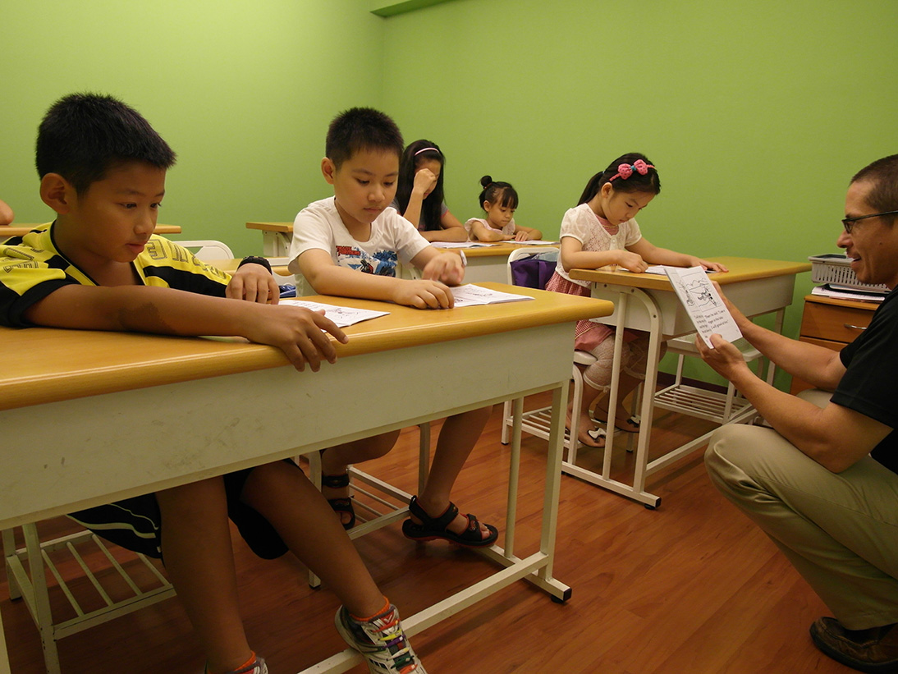
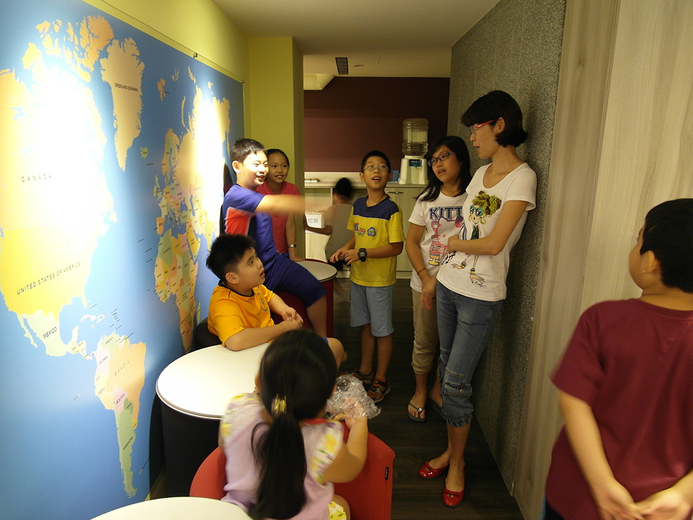
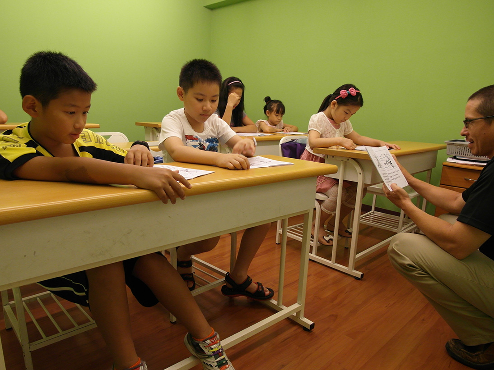
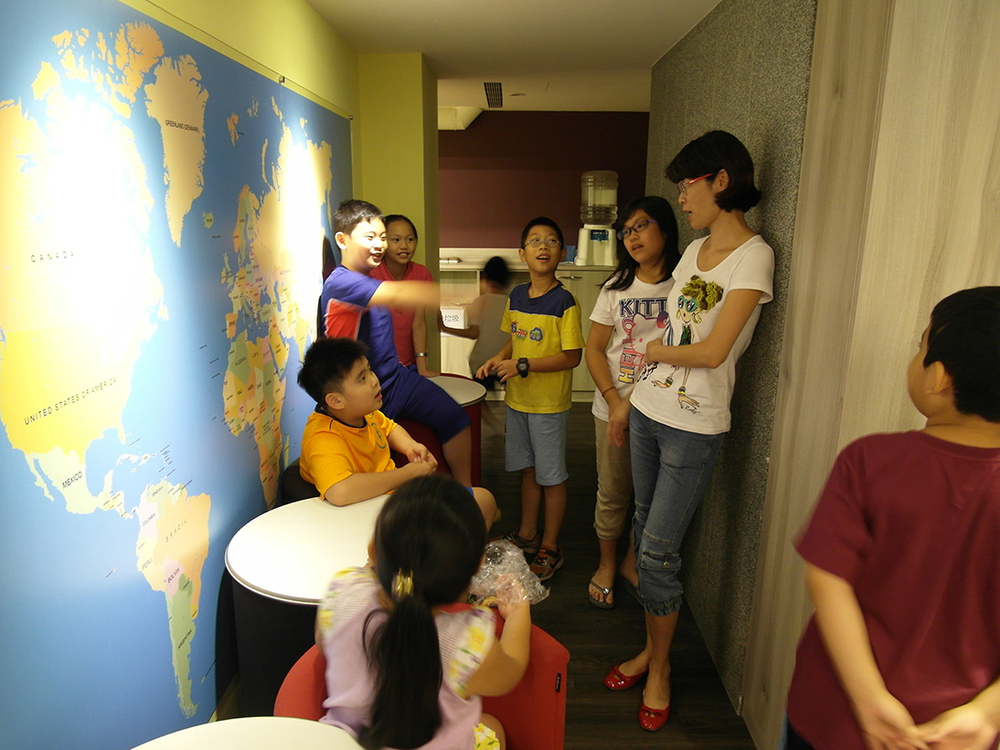

西斯頓母語班是專為已有穩固英文基礎的學生所設計，也就是說，他們曾長期就讀全美語幼稚園，或曾在美語系國家居住。這類的學生應該已經具備接近母語般流利的英文，而且有能力和美語人士自由交談，他們應該擁有豐富的字彙，並且熟習各種複雜的文法結構。
因此，西斯頓母語班並不是教導學生英文，因為他們已經具備不錯的英文程度，而是提供一個全美語的環境，讓他們的英文能力有進一步發展的空間。我們不再教導已經內化在他們心中的語言教材，而是引導他們以英文討論各種話題，並提供一個具系統性的教學結構讓他們“動腦筋”。換言之，我們廣泛地教導各種知識，以刺激他們的想像力，並藉由具挑戰性的活動，以幫助他們了解自己全部的潛能。我們以教導美語系國家學生的方式教導他們，也期望他們表現得猶如美語系國家的學生。簡言之，學生們參與討論、發問、回答問題、提出合理的假設、思考各種可能性、同意或反對其他同學的觀點。除了上課時的活動外，學生回家之後，必須要做“說”和“寫”的作業。西斯頓母語班是一個充滿“挑戰和收穫”的課程，而結果將證明這一切。
Our NSC is designed for children who have a strong foundation in English, whether through long-term attendance in an all-English kindergarten or from time spent in an English speaking country. Such students should already possess near-native fluency in English and be able to carry on lengthy conversations with native speakers. They should possess a wide-ranging vocabulary and be familiar with a variety of complex grammar structures.
Therefore the goal of our NSC is not to teach them English; they already know it. Rather, NSC offers them an environment to expand and further develop their existing English ability. This isn’t done by teaching them material which is already thoroughly ingrained, but by introducing them to a myriad of topics and providing a systematic structure within which they can exercise their minds. In other words, we introduce knowledge in order to stimulate their imagination and we use challenging classroom activities to help them realize their full potential. We treat them as native speakers and expect them to perform as native speakers. That means participating in class discussions, asking questions, answering questions, making educated guesses, suggesting alternatives, agreeing, disagreeing, etc. In addition to in class activities, students are also expected to do written and oral homework. Our NSC course is a challenging, but rewarding, course and in the end, the results will speak for themselves.


 


